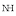

Ro
Centrul Național de Supraveghere și Control al Bolilor Transmisibile
Ministerul Sănătății (ghid)
Ce trebuie să știți despre noul coronavirus (Covid-19)
Departamentu pentru Situații de Urgență

Fb
DSU - aplicații mobil:

Android

iOS
"Află primul despre alerte din trafic, avertizări meteo sau calamități naturale"Ministerul Afacerilor Interne (Fb)

Institutul Național de Sănătate Publică
INSPEHartă Coronavirus RO (oficial)
Institutul Național de Sănătate PublicăCoronavirus COVID-19 România
(geo-spatial.org) hartăCasa Jurnalistului
Hartă răspândire + listă articole hartă listădesprecoronavirus.ro
Coronavirus – București
LIVE TEXT
/r/Romania
[Megathread] Coronavirus (COVID-19 crowdsourcingcovid19ro.org
selecție știri în limba română
(newsnow.co.uk) listăzelist.ro/live/coronavirus
listă
offline/404 😡 "Intrați pe fiipregatit.ro și vedeți ce trebuie să conțină trusa de supraviețuire"fiipregatit.ro
Cum puteți ajuta?
Comunitatea Entreprenation: "Împreună trebuie să acționăm. Implică-te acum alături de noi cu idei, soluții și resursele companiei tale" bestpracticesStarea de urgență

Funky Citizens

APADOR-CH

ajutorspitale.entreprenation.ro

ajutsieu.ro
Ghiduri
CDC.gov
Center for Disease Control and Prevention (US)Coronavirus disease (COVID-19) outbreak
Organizația Mondială a Sănătății (WHO)COVID-19 Myth busters
Organizația Mondială a Sănătății
2020 coronavirus pandemic in Europe
Wikipedia (Pandemic by country)Wikipedia (EN)

Wikipedia (RO)

Wikipedia (HU)

Coronavirus disease (COVID-19): Outbreak update
Guvernul Canadei
Monitorizare

NY Times live page

Harta evoluției Globale
Centrul pentru Stiință și Ingineria Sistemelor din cadrul Universității John Hopkins. map dashboard17 responsible live visualizations about the coronavirus
(datawrapper.de) map referenceHartă – Harvard medical school & co
map dashboardMaps / dashboards:
ncov2019.live
CoronaTracker.com
Coronavirus Tracker
co.vid19.sg
Surveillance Dashboard
(virginia.edu)worldometers.info
/r/Coronavirus/

Kurzgesagt – In a Nutshell
Proiecte

flattenthecurve.com
#StayTheFuckHome
- 
Coronavirus Tech Handbook
Tech against Coronavirus
techisitcanceledyet.com

covid-info.us

coronavirus.fm

feedadoc

coronavolunteer.org

queercare

coronawiki

howmuchtoiletpaper.com
A simple tool to calculate how much toilet paper you need to survive the pandemic
c119 pipeline

Epidemic Calculator

corona virus checklist
Articole
Coronavirus Lessons from SGP, TW and HK
What We Can Learn From Singapore, Taiwan and Hong Kong About Handling Coronavirus bestpractices
What you need to know about the Coronavirus
selecție de articole, The AtlanticJust how contagious is COVID-19?
Everything epidemiology can tell us about the new coronavirus.How Serious is the Coronavirus?
Infectious Disease Expert Michael Osterholm Explains | Joe Rogan videoKeep Calm and Wash Your Hands: Britain’s Strategy to Beat Virus
Abordarea guvernului din UKFinally, Some Good News: Warm Weather Shown to Slow Coronavirus Spread
- vs

Will warmer weather help fight the coronavirus?
Singapore and Australia suggest maybe notHow to Handwash
video
How Taiwan Used Big Data, Transparency and a Central Command to Protect Its People from Coronavirus
bestpracticesrezumat al tratamentelor existente
Tratament pentru infecția coronavirus SARS-CoV-2: peste 80 de studii clinice sunt în desfășurare. Remdesivir, medicamentul antiviral cu cel mai mare potențial terapeuticanaliză, infografice
Coronavirus: Why it’s so deadly in Italy
Demographics and why they are a warning to other countries
The Vitamin C Myth
There's no doubt that Vitamin C is good for you. But, contrary to popular belief, a mega-dose of Vitamin C is not an effective cold remedy.- economie

As world markets plunge into bear territory, China stock traders see only gains
economie
The Death of American Competence

Covid-19 explained
Find out how it all began. dataviz